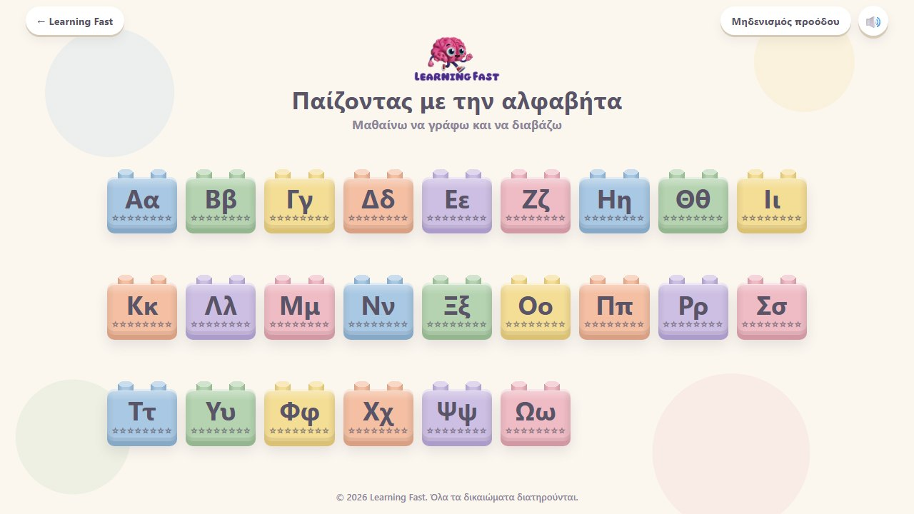

Ειδική Εκπαίδευση
Μαθαίνω να γράφω και να διαβάζω
Ένα ολοκληρωμένο εκπαιδευτικό παιχνίδι για όλα τα γράμματα του ελληνικού αλφαβήτου, σχεδιασμένο ώστε τα παιδιά να γνωρίσουν κάθε γράμμα σε βάθος, από την οπτική του αναγνώριση μέχρι τη γραφή ολόκληρων λέξεων. Κάθε γράμμα παρουσιάζεται μέσα από διαδοχικές δραστηριότητες που αυξάνονται σταδιακά σε δυσκολία:
- Εντοπίζω το γράμμα: Το παιδί βρίσκει το γράμμα ανάμεσα σε άλλα, ενισχύοντας την οπτική διάκριση και την προσοχή.
- Κεφαλαίο ή πεζό; Χρωματίζει με διαφορετικό χρώμα το κεφαλαίο και το πεζό, ώστε να αναγνωρίζει και τις δύο μορφές του γράμματος.
- Ποια λέξη ξεκινά από…; Επιλέγει τις εικόνες που αρχίζουν από το γράμμα, καλλιεργώντας τη φωνολογική ενημερότητα και τη σύνδεση ήχου–γράμματος.
- Συμπληρώνω τη λέξη: Τοποθετεί το γράμμα στη σωστή θέση μέσα σε λέξεις.
- Φτιάχνω και διαβάζω συλλαβές: Συνθέτει το γράμμα με φωνήεντα ή σύμφωνα και διαβάζει τις συλλαβές που δημιουργούνται, κάνοντας τα πρώτα βήματα στην ανάγνωση.
- Γράφω λέξεις: Γράφει ολόκληρες λέξεις.
Το παιχνίδι απευθύνεται σε παιδιά προσχολικής ηλικίας και Α΄ δημοτικού, καθώς και σε παιδιά με μαθησιακές δυσκολίες ή ειδικές μαθησιακές δυσκολίες. Μπορεί να χρησιμοποιηθεί στην τάξη, στην ειδική μονάδα, σε θεραπευτικές συνεδρίες ή στο σπίτι σε τάμπλετ, κινητό ή/και διαδραστικό πίνακα.
▶ Παίξε
▶ Παίξε